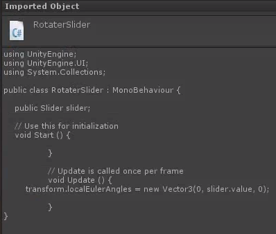
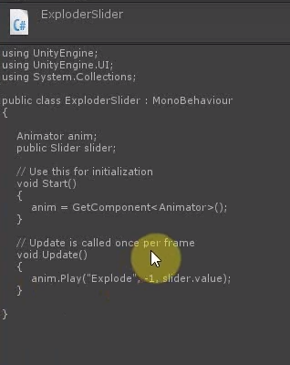
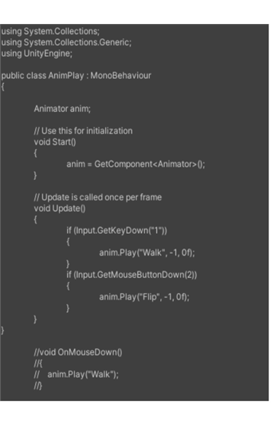

Unity Animation and UI Buttons Overview
Core Principles
Unity Scripting from extra Lectures 01 and 02
- Unity Animation from Lecture 05 and Tutorial 04
- Unity UI from Lecture 05
Task 5.1 - Lego Brick Array with Unity UI Slider
5.1 Part 1 Video
5.1 Part 2 Video
- Download Fbx Export Lego Brick Array Exploded
- Drag into Unity
- Create new Animator Controller and drag into Objects AC box
- Add/Edit Animations in Inspector
- Rest - Start:0, End:1, Loop
- Explode - Start:0, End:20, Not Looped
- Implode - Start:20, End:40, Not Looped
- Rest Explode - Start:20, End:21, Looped
- Drag into scene Hierarchy and zero out
- Drag animations into Animator window
- Default state is Rest
- Drag transitions to the other states
- Adjust camera to frame - adjust one axis at a time and use View Gimbal top right to navigate
- Create UI Slider:
- Right click in hierarchy and select UI/Slider. This creates a canvas to place it on.
- Position by dragging values in Rect Transform on Canvas/Slider:
- Slider Exploder (200,-200,0)
- Add New script ExploderSlider.cs to Brick Array Game Object and type in as below:
- Drag Slider Game Object into the box exposed in Inspector by this script
- Test
- Start with last scene
- Add new UI Slider on Same Canvas
- Name as rotator
- Position as needed by dragging values in Rect Transform on Canvas/Slider: Slider Rotator (-200,-200,0)
- try Rect Transform box presets with Shift and Alt to position Automatically
- Slider script:
- In Max Value - type in 360

Gyazo preview (click image to expand). - Add New script RotatorSlider.cs to Brick Array Game Object and type in as below:

Reference image 2 from the tutorial source. - Drag Slider Game Object into the box exposed in Inspector by this script
- Test
- Try the extra script included below for extra interactivity

Task 5.2 - Lego Widget Minifig Animation with Unity UI Buttons
5.2 Video
- Use Lego character built from Mecabricks animated in Max
- Widget02StandWalk
- Stand, walk, and flip animations
- Import to Unity, make Animator Controller
- Edit Animation timeline in Inspector to create stand, walk, flip
- Stand - 0,0 - looping
- Flip - 0,20 - looping
- Walk - 20, 60 - looping
- Put animations in Animator window with Stand as Layer Default State, and Flip and Walk with transitions from Entry State
- Create Unity UI Button
- Screen space overlay
- In button anchors box, click to enter
- Hold down alt and select centre or top to snap button position
- Drag button to desired position with rect transform
- Add an on-click event for button
- Drag Lego minifig into exposed box
- Select Animator play string name option
- Type in name of animation from animator
- Test
- Try turning loops on and off
- Try combinations of buttons and scripting by using below script on the Lego Figure
AnimPlay.cs

Task 5.3 - Try the same with the Lego Minifig fbx in Blackboard for CW1
Try the same with the Lego Minifig fbx in Blackboard for CW1